A medieval Sherlock Holmes
This is more than an isometric adventure. It is clockwork in which the mystery continues while William is elsewhere: monks work, conspire, move objects, report intruders, and die on schedule.
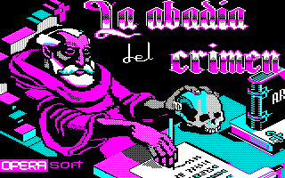
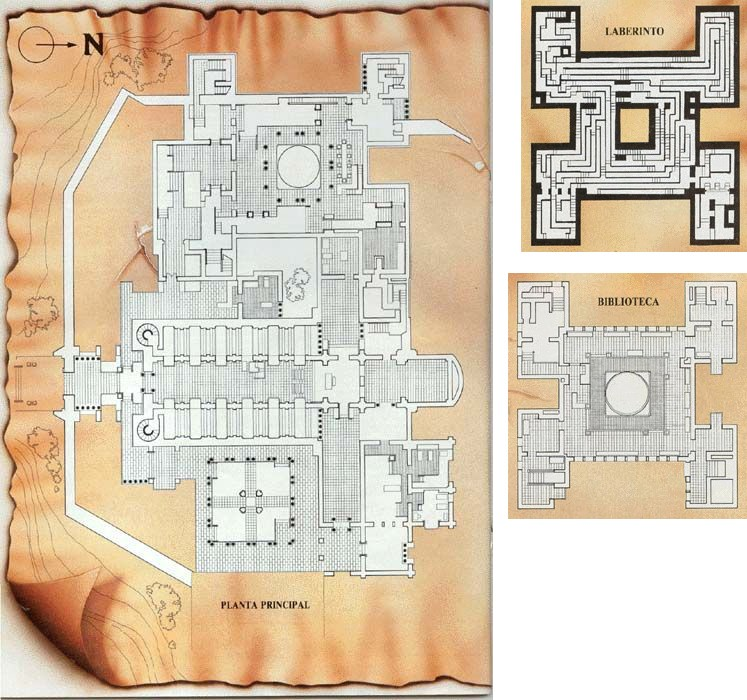
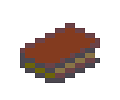
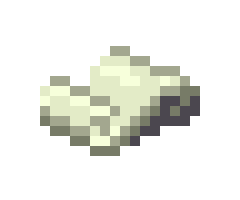
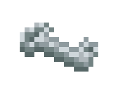
BOOK · CODE · ACCESSThe premise takes the frame of The Name of the Rose: a rationalist Franciscan and his young novice arrive at an Italian abbey where an impossible death heralds more. William of Occam replaces the novel’s William of Baskerville; names change, pieces are compressed, and the huge theological argument becomes action, schedules, and architecture.
Menéndez and Delcán tried for months to secure the novel’s title. No reply came, so they adopted a phrase Umberto Eco had once considered as an alternative title: La Abadía del Crimen. The missing licence ultimately gave the game an identity of its own.
“Something horrible has happened.” Four words, and we are already obeying a man we should not trust.
The game was completed and began circulating late in 1987; its major press debut came in January and February 1988. That split explains why catalogues variously date it 1987, 1988, or even 1989 according to platform, publisher, and reissue.
Two friends raise an abbey
A programmer determined to finish something unsurpassable, and an architecture student able to turn a handful of pixels into stone, height, and perspective. Development took roughly fourteen months.
Program, systems, direction
Paco Menéndez
He had programmed Fred and Sir Fred. Here he built pathfinding, isometric animation, camera priorities, inventory, doors, schedules, and every monk’s behaviour. The achievement was not merely fitting a large abbey into 128 KB; it was making the place appear inhabited.
Graphic and architectural design
Juan Delcán
Paco’s friend since they were nine and then an architecture student. He planned the rooms on paper, sacrificed ornament when memory ran out, and made a railing, a shadow, and four colours suggest a coherent building.
MSX conversion
José Ramón Fernández Maquieira
He adapted the game to the Japanese standard. Its geometry stays close to Spectrum, but the cassette and disk editions differ: black and yellow on tape, blue and yellow on disk.
Publication and commercial life
Míster Chip · MCM · Opera Soft
The publishing chronology is tangled. The game was made outside Opera, passed through Academia Míster Chip/MCM, and became associated with Opera Soft, which brought it to more machines and made it a cornerstone of its catalogue.
Eight lives, seven days
Choose a portrait. Each dossier combines what players see with the genuine routines described by the reconstructed code. This chapter contains story spoilers.
Friar William of Occam · Reason under surveillance
William
He is the only figure whose agenda depends on us, yet the abbey treats him as another moving piece. He can carry six objects, open doors according to his keys, read the scroll when wearing the spectacles, and die by leafing through the poisoned book without gloves.
“I fear one of the monks has committed a crime.”
Adso of Melk · Companion, compass, bearer of light
Adso
His apparent clumsiness hides elaborate following logic. He searches routes to William, tries alternative directions, steps away when blocking him, and can be controlled directly to collect selected objects. The daily cycle also makes him leave his master for communal duties.
“Shall we sleep, master?”
The Abbot · Stage manager and keeper of time
The Abbot
He sets the game’s pulse. He waits until the expected monks occupy their places before mass or meals, escorts William to his cell, closes the night door, and patrols against intrusions. He is more than an obstacle: he coordinates the dramatic clock.
“You must respect my orders and those of the abbey.”
Malachi · Keeper of the scriptorium
Malachi
He lives between his desk and the forbidden threshold. He guards a key, blocks the library stairs, and turns an overlong scriptorium visit into a report. In the evening he closes the western wing, waiting until Berengar—and later Bernard—have left.
“I am sorry, venerable brother: you may not enter the library.”
Berengar · A witness who also watches
Berengar
He works in the scriptorium and serves as guide on day two, praising the copyists and pointing out Venantius’s desk. But he protects the scroll. If William takes it, he demands its return; if William persists or leaves the room, Berengar finds the Abbot.
“Leave Venantius’s manuscript, or I shall warn the Abbot.”
Severinus · Herbalist and voice of doubt
Severinus
From day two onward he introduces himself and states the game’s political idea: somebody decides what monks may know. He examines Berengar’s body and spots black stains that connect the deaths with the book.
“Someone does not want the monks to decide for themselves what they should know.”
Jorge of Burgos · The still centre of the maze
Jorge
For much of the game he is not even active. He appears for one carefully staged conversation, then disappears until the finale. His stillness is not absence; it is control.
“The paths of the Antichrist are slow and tortuous.”
Bernard Gui · Investigation as pursuit
Bernard
He appears on the stairs on day four. He is not hunting the murderer; he is hunting the manuscript. If William carries it, Bernard follows him, demands it, and reduces Obsequium until taking it, then delivers it to the Abbot.
“Give me the manuscript, Friar William.”
The bells command
This clock does not show modern hours. It divides life into canonical offices. Select a phase to see the abbey change.
The timetable is the level
In most games, time creates hurry. Here it creates conduct. The player must interrupt the investigation, find the church or refectory, and stand in the exact place. Ceremony is not an intermission: it is the mechanism that checks who remains alive and what should happen next.
Internally, the value runs from 0 to 31. Reprimands lower it; exhausting it means expulsion. Obedience becomes interface.
The abbey as suspect
Isometric perspective hides doors behind walls, reverses instinct, and demands a memory for height. The building does not merely contain the mystery; it performs it.
{kind=link}
The abbey, stitched room by room
The maps and routes shown here were created years ago by Manuel Pazos for his Viento Sur website. The seven pages selected for this tribute belong to La Abadía del Crimen: guide to completing the adventure, a separate, later work based on that material; they are not the original Viento Sur guide. Its unchanged reproductions of Micromanía maps have been omitted because the magazine's original pages already appear above. The guide's own montages assemble the real CPC screens; numbering identifies each room and turns isometric perspective into a walkable plan for finishing the game.
{kind=link}
This selection retains the reconstructions, annotations, and illustrated day-by-day solution; the plans reproduced without changes can be viewed above in the original Micromanía pages.
Stone by stone, machine by machine
Eight rooms arranged to compare geometry, colour, and readability. This is not a spatial plan but a mosaic of recurring architecture.


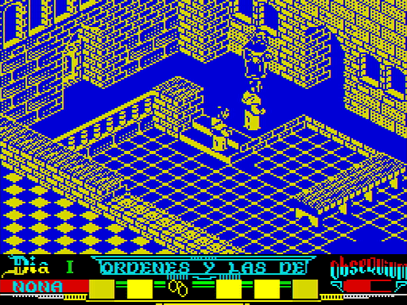

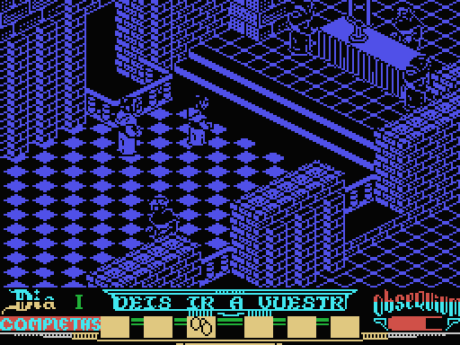

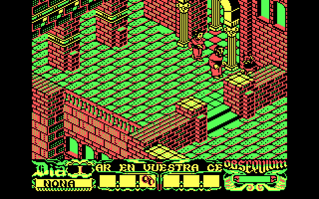
Eight objects, no accidents
The inventory is tiny and choreographed. Objects change hands, appear only on selected days, or open routes the game never explains.
These icons belong to the VGA remake.
Book
The Coena Cypriani. It passes through several hands, kills anyone who moistens a finger, and triggers the finale.
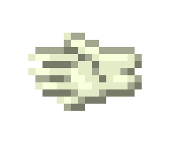
02 · ProtectionGloves
They make the poisoned book safe to touch. Jorge cannot see them; Adso can.
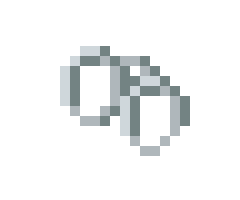
03 · ReadingSpectacles
They make the scroll readable. They appear in the maze’s lit room and may vanish at dawn.
Scroll
Venantius’s manuscript contains the mirror clue. Berengar, Bernard, and the Abbot may take it away.
Key I
It passes through the altar; if not taken in time, it disappears. Stealing it may wake the Abbot.
Key II
Part of the nocturnal chain. Keys dynamically alter which doors the pathfinder considers passable.
Key III
Connected to Severinus’s room and Malachi’s desk—another object embedded in a monk’s schedule.
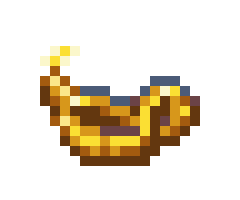
08 · TimeLamp
Adso carries it. It burns only in dark rooms, warns before expiring, and may reappear in the kitchen on another day.
Seven days to the Finis Africae
First the spoiler-light version; then, if you choose, the full machinery. The cards scroll horizontally on small screens.
Hidden plots are blurred.
Arrival
The Abbot guides us in, explains the crime, and lays down the rules. The west wing is forbidden.
Architecture and routine are learned while the case still appears manageable.
The scriptorium
Severinus introduces himself. Malachi lets Berengar show the workplace.
Venantius’s scroll can be taken; Berengar threatens to report William, while Malachi guards the library.
The elder
The Abbot presents Jorge, who speaks of Antichrist and the final days.
At night, hooded Berengar steals the book, takes it to Severinus’s cell, and dies. Jorge hides it at dawn.
The Inquisition
Bernard arrives. The Abbot orders the investigation stopped.
Bernard pursues the scroll and gives it to the Abbot. Severinus reveals Berengar’s blackened tongue and fingers.
A thousand scorpions
Bernard leaves. Severinus finds a strange book in his cell.
Malachi kills Severinus at terce. During vespers, Malachi dies in church from the same poison.
The library
The Abbot says we will leave tomorrow. The pieces of the mirror puzzle can now fit together.
Keys, spectacles, scroll, and lamp make it possible to cross the library and open the room behind the mirror.
The book
Expulsion is imminent. Terce is the final limit.
Jorge offers the poisoned book. Gloves frustrate the plan; he flees towards the maze, and the investigation concludes.
The same stone, other palettes
The five contemporary versions keep the plan and recognisable sprites, but they are not mere recolours. The final tab jumps ahead to the later VGA remake to show how far the same architecture could be carried.
The original version
Development began on the CPC 6128. Its graphics mode made it practical to design in four colours and reduce the result for other machines. This is the reference edition: complete map, architectural detail, turquoise, orange, cream, and black.
- 128 KB and disk.
- Full floor plan, including corridors unrelated to the plot.
- Details such as window crosses that disappear from the 64 KB version.
- Opening music and hardware-generated effects.
A shortened abbey
The cassette CPC 464 and disk CPC 664 could not hold the entire 6128 design. Rooms and corridors with no direct plot function were removed, and decorative elements simplified.
- The essential mystery and required routes remain.
- Less ornament: some windows lose their crosses.
- A fascinating case of architecture adapted to memory, not merely compressed code.
Blue, yellow, and 128 K
Paco tried to fit the game into a smaller Spectrum, but only a 128 KB edition was released. Geometry survives within a two-colour presentation that makes the building more abstract and sometimes more severe.
- No official 48 KB version.
- Almost the same structure and central logic.
- Occasional slowdown with several characters.
- Reduced colour weakens depth separation without making scenes unreadable.
Two MSX editions often confused
José Ramón Fernández Maquieira’s conversion visually descends from Spectrum. The original cassette is black and yellow; the disk edition retains blue and yellow. That is why MSX screenshots appear to contradict one another.
- 64 KB.
- Graphics and plan very close to Spectrum.
- Input MSX praised the atmosphere but criticised silence, slowdowns, and lock-ups.
- MSX2 later received a 16-colour remaster with time-of-day palettes.
Red, green, and a computer that sings
The PC version was rewritten for Intel architecture. It offers CGA colour and monochrome; visually harsher than CPC, but with the game’s most memorable sonic surprise.
- A digitised Ave Maria through the internal speaker.
- On copies detected as unofficial, it became a voice saying “pirata”.
- Later reissues circulated without these digital blocks, so many owners never heard them.
- The local archive preserves and reconstructs both timer-driven routines.

The stone, redrawn
Antonio Giner’s project came after the original conversions. It grew from a reverse-engineered reconstruction of the PC program and retained its building, schedule, and logic, while redrawing the abbey in 256 colours.
- A VGA DOS version circulated from 2001.
- The Windows adaptation added 32-bit execution, sound, and several languages.
- It can also switch between VGA art and the colour or monochrome CPC graphics.
- Its full story continues in chapter XIII, before Extensum.
Original-version and VGA-remake captures: Computer Emuzone, reused with attribution under its content policy.
Ave Maria and the sounds of the abbey
The digitised Ave Maria is the centre of this sound archive. Around it remain the bells, footsteps, opening theme, ambience, and the extraordinary anti-piracy accusation.
The speaker trick
The PC speaker was designed for beeps, not voices. The DOS version drives the programmable timer at high speed, turning a stream of bits into a crude waveform. The result is rough, but in 1988 it sounded as if the abbey had learned to sing.
The local archive contains the digital data and two assembly reconstructions: one for the Ave Maria and one for the anti-piracy warning. Engineering notes locate both blocks inside the original executable.
The best copy protection did not prevent copying the game. It turned a sacred moment into an accusation.
When the abbey reached the newsstand
Review, solution, contest, awards, interview, reissue. These are not decorative crops: each image opens the complete page for reading as it appeared.


From a nine to a myth
Micromanía awarded a 9 both to the original and to the PC conversion, called “simply sensational.” MicroHobby introduced a medieval Sherlock Holmes, printed maps and a talk with Paco Menéndez, and later recorded reader awards for graphics, plot, and programmer.
The press did more than judge the game: it taught people how to play. Plans and solutions were a second interface spread across the table beside the computer.
A medieval Sherlock Holmes
The premise and mechanics, together with a contest for readers.
Map and investigation diary
Plans of the abbey and a route through the mystery's seven days.
The habit does not make the monk
Paco Menéndez discusses production, the conversions, and his future projects.
La Abadía del Crimen · 9/10
A review of the plot, exploration, atmosphere, and difficulty.
Complete seven-day guide
An illustrated solution arranged by day and canonical hour.
Contest winners
The four drawings rewarded after the challenge in issue 162.
The best programs of 1988
Awards for its graphics and plot, and for Paco Menéndez as programmer.
Simply sensational · 9/10
The PC conversion, its new palette, and its digitised voices.
Selección MicroHobby
A cover-cassette reissue of the game, accompanied by loading instructions.
Retro Gamer España 41: Paco before the mirror
The second half of Jesús Martínez del Vas’s major profile does more than remember the game: it publishes Juan Delcán’s studies, original labyrinth plans, and a dossier on the ultra-secret PALOMA Project. Seven of its finest visual documents open below.
When Britain discovered the abbey
It never reached the UK in its day, but Retro Gamer gradually recovered it as a Spanish secret worth importing. The four preserved appearances form a small history of belated canonisation.
91% among isometric giants
It is set beside Inside Outing, The Immortal, and other titles, and introduced as one of the genre's great adventures.
The tenth perfect Spectrum 128
An imported rarity made difficult by the language, but—says the magazine—genuinely worth discovering.
Import Only: the great rediscovery
The fullest feature calls it one of the finest isometric adventures ever made and explains the living world, seven days, and conversions.
The abbey reaches the PCW
“Minority Report” records Habisoft's 2012 port to the office computer's green screen.
“You have already heard of this game”
Six period advertisements preserved at full-page resolution. The campaign sells awards, mystery, and prestige; sometimes the game shares a page with other Opera successes. Select any page for a legible view.
Source: Computer Emuzone, which permits reuse of collected material with attribution.
How the abbey thinks
The original source code was not preserved. Years of reverse engineering described the Z80 program line by line and enabled functionally equivalent modern implementations.
Grid and height
Each character occupies a grid cell with height. Stairs become commands to climb, descend, or advance.
Doors and objects
Keys alter the room-connection table. The pathfinder knows which rooms each character can reach.
States
Every monk is a little machine: working, warning, following, reporting, sleeping, or dying.
Routes
Characters calculate paths to fixed destinations. Adso adds lateral priorities to avoid blocking William.
Camera
If the player stands still, the view may leave William to show a significant act elsewhere.
The indiscreet camera
This last trick transforms the world. The abbey seems to continue without us because it literally shows Berengar, Bernard, Malachi, Severinus, or the Abbot when a meaningful act is underway. Selection depends on specific states, not chance.
The modern source names ideas once expressed as registers and addresses: momentoDia, objetos, seBuscaRuta, obsequium. Archaeological commentary becomes another way to play.
The artificial intelligence does not try to look human. It tries to look monastic: repetitive, hierarchical, and suddenly guilty.
First rebuild; then expand
Antonio Giner carried the intact abbey onto modern computers and redrew it in VGA. Years later, Manuel Pazos and Daniel Celemín used that memory as a starting point for opening new rooms.
The same abbey, in 256 colours
Antonio Giner’s remake grew from a reverse-engineered reconstruction of the PC executable. A VGA DOS edition began circulating in 2001; the Windows adaptation restored sound, added translations, and brought the game to 32-bit systems. The build preserved in this project is dated 30 December 2008.
It does not set out to enlarge the adventure: map, schedule, characters, and rules remain intact, while presentation and compatibility change. Its VGA graphics redraw the scenery in 256 colours, although the program can also return to the colour or monochrome CPC artwork.
Screenshots preserved by Computer Emuzone and reused with attribution under its content policy.
Extensum: remake and expansion
Extensum preserves the isometric heart and schedule, but enlarges the map, adds characters, situations, cinematics, and new logic. It offers classic or directional controls and optional aids: map, alternate camera, an indicator for the sleeping Abbot, and an oil gauge.
Its lineage is long. Manuel Pazos had studied and ported the work for years—MSX2, J2ME, Java—while Daniel Celemín renewed the visuals with pixel art that evokes the film without abandoning the original’s clarity.
It runs on Windows, macOS, and Linux with several interface languages. More than 20,000 copies were downloaded during its first week; Steam reviews remain very positive.
The game that refused to end
It had no international campaign in its own time, but translations, emulation, and a stubborn community achieved what distribution did not: they carried it beyond Spain.
The original
CPC 6128, 64 KB CPC, Spectrum 128, MSX, and PC DOS.
Reconstructions
MSX2, J2ME phones, Java, Win32 remake, and VIGASOCO open code and platforms.
Obsequium
A 184-page collective book brings together cultural, technological, and emotional memory.
Extensum
The expanded remake fills rooms memory had left empty.
The stamp
Spain’s postal service issues a hexagonal sheet with heat-sensitive hidden objects.
35 years
A new commercial edition and a two-part Retro Gamer España feature on Paco.
A cult work, literally
In 2017 Correos marked the thirtieth anniversary with six stamps in a hexagonal miniature sheet. Warm its thermochromic ink and objects appeared behind doors—a physical effect uncannily true to a game about looking where one must not.
Retro Gamer España published part one of “Paco Menéndez ante el espejo” in issue 40, under the subtitle “El genio de Avilés que quería saber.” Issue 41 continued the profile with “De los monjes franciscanos a la red neuronal de PALOMA,” also promoted on its cover. The eleven-page extract from issue 41 is preserved locally and presented above; the pages of part one remain to be located.
The abbey survives because every generation finds a different door: cassette, emulator, code comment, stamp, remake.
Where every clue came from
This tribute distinguishes contemporary documents, technical reconstruction, testimony, and retrospective writing. Interpretations are ours; visual materials retain their provenance.
Preserved magazines and guides
- MicroHobby 162, 175, 188, and 215.
- Micromanía first series 31 and 33; second series 3.
- Input MSX / Input Micros 29 and Amstrad Sinclair Ocio 4.
- Selected pages from Retro Gamer España 41 and Retro Gamer UK 28, 48, 73, and 131.
- Viento Sur: La Abadía del Crimen, a preserved copy of Manuel Pazos's old website containing his original maps and guide.
- La Abadía del Crimen: guide to completing the adventure, a later guide based on that material and shared by @EnriqueBCN on X; Enrique himself acknowledged its provenance. View the seven selected pages.
Project archaeology
- Local DOS disk images and executables.
- Disassembly, loading, object, sound, and digital-sample notes.
- VIGASOCO and Abbey: documented equivalent implementations after reverse engineering.
- Source for dialogue, characters, clock, objects, camera, and scoring.
Online archives
- Computer Emuzone: profile, captures, maps, adverts, credits, development, and its CPC, Spectrum, MSX, and PC DOS multiplatform archive.
- System records: CPC-Power, World of Spectrum, MSX Games World, and MobyGames.
- Pixelmaniacos: PC capture of mass in the church.
- Development sketches: Juan Delcán’s squared-paper designs.
- Reconstructed source: equivalent implementation reverse-engineered from the CPC original.
- El Mundo del Spectrum: history and Spectrum version.
- Rights-assignment contract: historical document.
- Juan Delcán interview.
- Access and rights: Computer Emuzone states that the classic-game authors it has been able to contact authorized availability of their games. This tribute hosts no copies; use your own copy or a distribution expressly authorized by its provider.
Legacy
- Antonio Giner’s VGA remake, preserved record and downloads.
- Extensum on Steam and official images.
- Obsequium bibliographical record.
- Official Correos stamp.
- Retro Gamer España 40 and Retro Gamer España 41.
- Academic study of its many versions.
Visual credits: pages and cartography from the magazines and guides preserved in the Revistas folder; screens, general map, and advertising collected by Computer Emuzone and reused with link and attribution under its content policy; PC church capture from Pixelmaniacos; commemorative miniature sheet from the official Correos listing; Extensum captures from its official Steam page. The loading screen and sounds come from preservation files and ports in this project; portraits and objects were extracted without redrawing from GraficosVGA in the local VIGASOCO reconstruction. The chapter initials use GregorianFLF, the typeface supplied with this project; the clock labels use the game's 8-bit dialogue typeface. The work, characters, graphics, and marks belong to their respective owners. Non-commercial site for documentation and tribute.